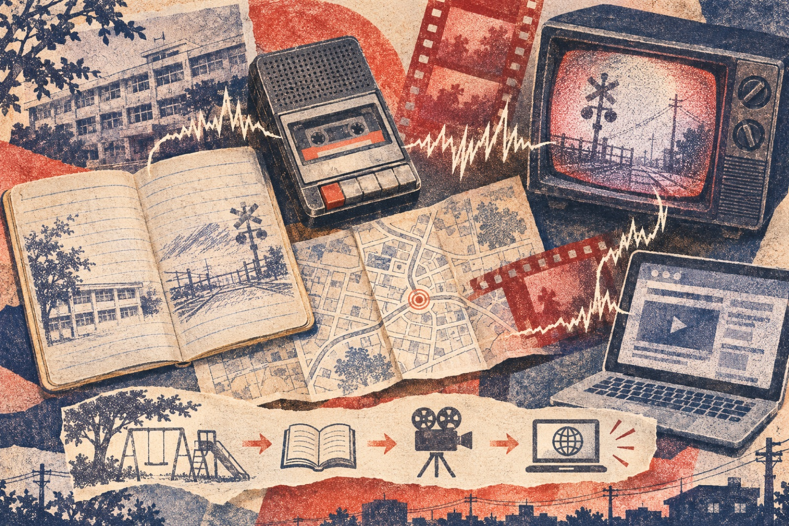

Japan with
Japan with

First comes the noise: teke, teke, teke—a hard, repeating clatter closing the distance behind you. Turn around and, according to a familiar version of the story, a human upper body is moving impossibly fast on its hands or elbows. If it catches you, some tellers say, it makes your body resemble its own.
That compact image has travelled far beyond Japan. English retellings often present Teke Teke as the vengeful spirit of a schoolgirl killed by a train in Hokkaido. A second name, Kashima Reiko, is sometimes attached as if it were a legal identity. But when we ask the basic historical questions—who first told it, where, and in what words—the neat biography dissolves. The uncertainty is not a defect. It is the mechanism that built the monster.
What is Teke Teke?
The stable core is strikingly small. A person-like being lacks a lower body, advances using the upper body, and is named for the sound of that movement. Even the gender is not completely stable in collected retellings. The setting may be a school corridor, a road, a railway edge or somewhere reached through a mirror. Some versions say the creature pursues; others say eye contact or merely hearing the story triggers danger.
This is why calling Teke Teke simply a yōkai, ghost or onryō can mislead. Those labels overlap in popular use but carry different histories. Teke Teke behaves most securely as a modern legend: a short narrative passed as something that could happen nearby, constantly adjusted to fit the teller’s school, route home and available media.
The origin story that arrived after the monster
The most repeated online account supplies a complete tragedy: a young woman or schoolgirl falls onto northern railway tracks, a train divides her body, cold delays her death, and her angry spirit begins hunting others. Variants add bullying, suicide, a particular station or a named woman. These details produce emotional logic, but repetition is not documentation.
The International Research Center for Japanese Studies maintains a database built from Japanese folklore publications. One searchable record from a Kobe high school, published in 2001, describes “Teke-teke-san” in a mirror: meeting its eyes causes pursuit. Notice what is missing. The brief record does not require the standardized railway biography now treated as canonical online. It is evidence that the name circulated in a school setting—and that a local version could operate through a mirror.
Folklore reporting places related upper-body school terrors in the 1980s and shows Teke Teke becoming especially visible during Japan’s 1990s gakkō no kaidan, or “school ghost story,” boom. Children’s books, television and film did not merely preserve oral stories. They offered memorable pictures and shared labels, allowing scattered, locally named figures to converge.

The surprising answer: the sound came first
Here is the central discovery. Teke Teke’s most durable identity is not a victim’s biography. It is a portable sensory package: an incomplete shape, impossible speed and a two-beat sound. A biography can be replaced while those three elements keep the listener saying, “I know that one.”
The name does unusual work. It imitates movement, acts like a warning, and gives a child an instant performance: lower the voice, repeat the syllables, then accelerate. The story can be told in under a minute. It needs no historic castle or shrine. A corridor, footbridge or road the listener already knows becomes the stage.
Speed also repairs a narrative problem. A being without legs might seem less threatening; tellers reverse that expectation by making it faster than a person. The perceived weakness becomes the scare. In some variants, the threat of being cut into the same form completes a harsh symmetry: the pursuer reproduces itself.
Why schools manufacture perfect legends
School communities create repeated routes, forbidden corners, older and younger cohorts, and long periods when stories can circulate away from adults. Folklore scholar Kikuichirō Satō’s study of remembered school ghost stories is revealing: former students’ recollections could become very different from what a teacher remembered telling. Memory does not simply degrade a story; a group rebuilds it into the story that belongs to them.
A 2008 study of Japanese elementary pupils found books, magazines, manga and television were major routes for encountering ghost stories, while 45 percent also named friends. That mixed channel matters. Published media can standardize a name or image, then conversation localizes it again. Teke Teke therefore moves in both directions: screen to playground, playground back to screen.
Japanese productions made that circulation visible. A 1994 television installment titled “Yōkai Teke Teke” appeared within the Gakkō no Kaidan wave. The 1995 feature film School Ghost Stories included a Teke Teke-like creature among its school apparitions, and a 2009 two-film horror adaptation gave the legend another defined body and plot. These are creative versions, not archival proof of how children first told the tale.
Teke Teke, Kashima-san and the danger of false certainty
Online summaries frequently merge Teke Teke with Kashima-san or “Kashima Reiko.” Kashima stories often involve a mutilated figure, a question-and-answer ordeal, or a warning that the being will visit after the tale is heard. The overlap makes combination easy. It does not prove that one name reveals the other’s original identity.
The responsible approach is to map variants rather than force a family tree. Did the teller name the being? Was it summoned by knowledge, eye contact or location? Did it move with a sound? Was a railway death already included? Asking those questions preserves evidence that disappears when every half-bodied apparition becomes one canonical woman.
How to experience the legend responsibly
Teke Teke has no authenticated grave, station or accident site that visitors need to seek. Railway tracks and restricted school grounds are dangerous and private; never trespass, stage scares, film pupils, or treat an actual accident as supernatural entertainment. If a web page identifies a “real victim” without contemporary records and careful sourcing, regard that claim as unverified.
The best way to encounter Teke Teke is through the media trail: compare a documented folklore record, a children’s retelling and a screen adaptation. Mark what each adds. The exercise turns fear into media literacy without draining the story of its power. You begin to hear how every new platform changes the footsteps.
The Japanese word kaidan (怪談) means a strange or ghostly tale; gakkō no kaidan (学校の怪談) means school ghost stories. Practice the language around Japanese stories at Japanese Training Lab—free web practice with no signup. To see ordinary Japan without manufactured scares, walk present-day streets with Yuji on TikTok LIVE; DraMap, created by Yuji, lets iPhone users learn Japanese while playing.
Reporting sources
- International Research Center for Japanese Studies: Kaii–Yōkai Denshō Database (official research database; includes record 2610026, Kobe, 2001).
- Nichibunken: database scope and methodology.
- Kikuichirō Satō, “Memory and Reality of School Ghost Stories,” Oral Literature Research 45 (2022).
- Shueisha Online interview/essay by folklorist Ryūhei Hirota on school-ghost-story media history.
- Nicole Garcia, University of Florida honors thesis: contemporary participant descriptions of Japanese supernatural beings.
- AllCinema production record for the 1994 television School Ghost Stories series.
- AllCinema production record for the 2009 film Teketeke.
Sources and links checked November 11, 2026. Dates refer to records or publications, not proof of a single birthplace. The article treats named victims, exact origin locations and railway biographies as variants unless independently documented. Selection and interpretation are Japan Unfolded’s editorial judgment.

See the real Japan beyond the rumor.
Yuji edits Japan Unfolded and created DraMap. Watch Japan on TikTok LIVE, then learn Japanese while playing.
Japan Unfolded is independently edited by Yuji Shimizu, creator of DraMap. The app link is publisher promotion; editorial claims are sourced above.